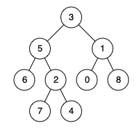
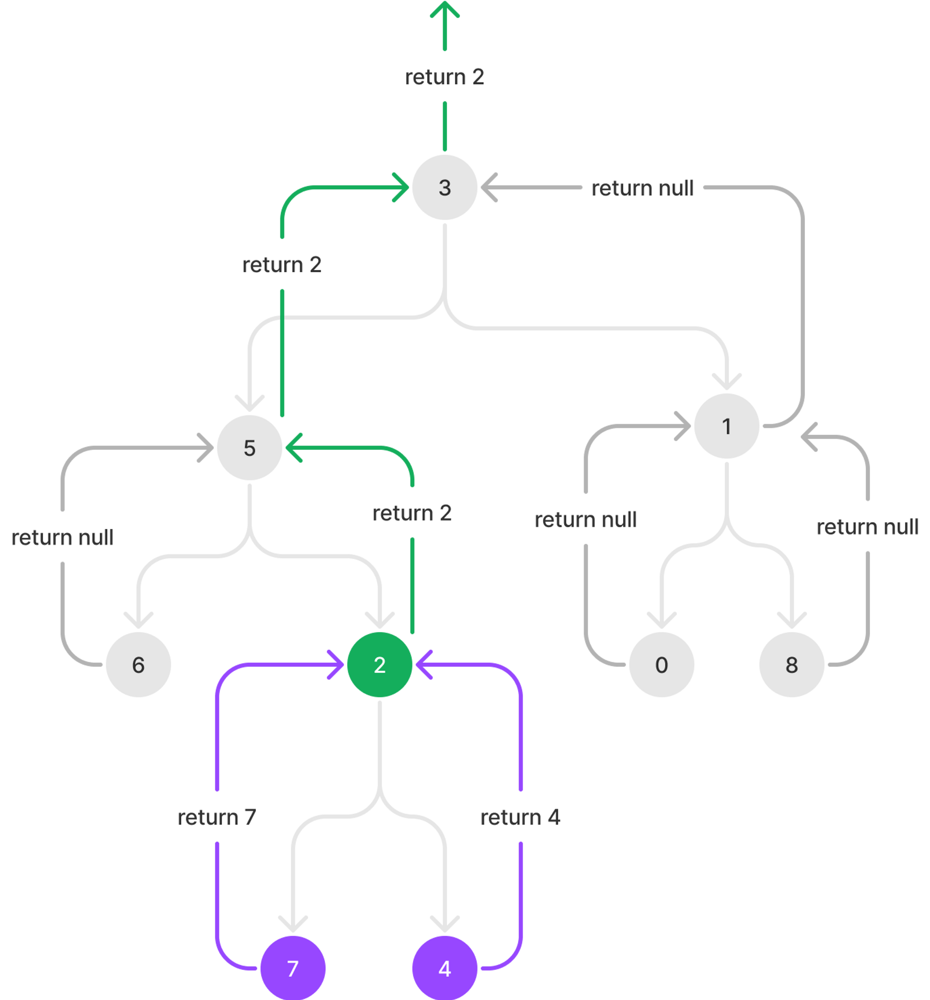

二叉树的最近公共祖先
题目
给定一个二叉树, 找到该树中两个指定节点的最近公共祖先。
百度百科中最近公共祖先的定义为：“对于有根树 T 的两个节点 p、q，最近公共祖先表示为一个节点 x，满足 x 是 p、q 的祖先且 x 的深度尽可能大（一个节点也可以是它自己的祖先）。”
示例 1：

输入： root = [3,5,1,6,2,0,8,null,null,7,4], p = 5, q = 1
输出： 3
解释： 节点 5 和节点 1 的最近公共祖先是节点 3 。
示例 2：
输入： root = [3,5,1,6,2,0,8,null,null,7,4], p = 5, q = 4
输出： 5
解释： 节点 5 和节点 4 的最近公共祖先是节点 5 。因为根据定义最近公共祖先节点可以为节点本身。
示例 3：
输入： root = [1,2], p = 1, q = 2
输出： 1
提示：
- 树中节点数目在范围
[2, 105]内。 -109 <= Node.val <= 109- 所有
Node.val互不相同。 p != qp和q均存在于给定的二叉树中。
/**
* Definition for a binary tree node.
* function TreeNode(val) {
* this.val = val;
* this.left = this.right = null;
* }
*/
/**
* @param {TreeNode} root
* @param {TreeNode} p
* @param {TreeNode} q
* @return {TreeNode}
*/
var lowestCommonAncestor = function(root, p, q) {
};参考答案
- 我们使用递归，当节点为null或者节点等于p或q向上返回此节点。
- 在结果向上回溯的过程中，要对左右节点的返回值进行判断：
- 如果左右节点返回的值都不为null（如图中紫色箭头所示），

复杂度
- 时间复杂度: O(n)
- 空间复杂度: O(1)
Code
/**
* Definition for a binary tree node.
* function TreeNode(val) {
* this.val = val;
* this.left = this.right = null;
* }
*/
/**
* @param {TreeNode} root
* @param {TreeNode} p
* @param {TreeNode} q
* @return {TreeNode}
*/
var lowestCommonAncestor = function (root, p, q) {
var travelTree = function (node, p, q) {
if (node == null || node == p || node == q) return node;
let left = travelTree(node.left, p, q);
let right = travelTree(node.right, p, q);
if (left && right) {
return node;
}
else if (left && right == null) {
return left;
} else if (left == null && right) {
return right
} else {
return null
}
}
return travelTree(root, p, q)
};